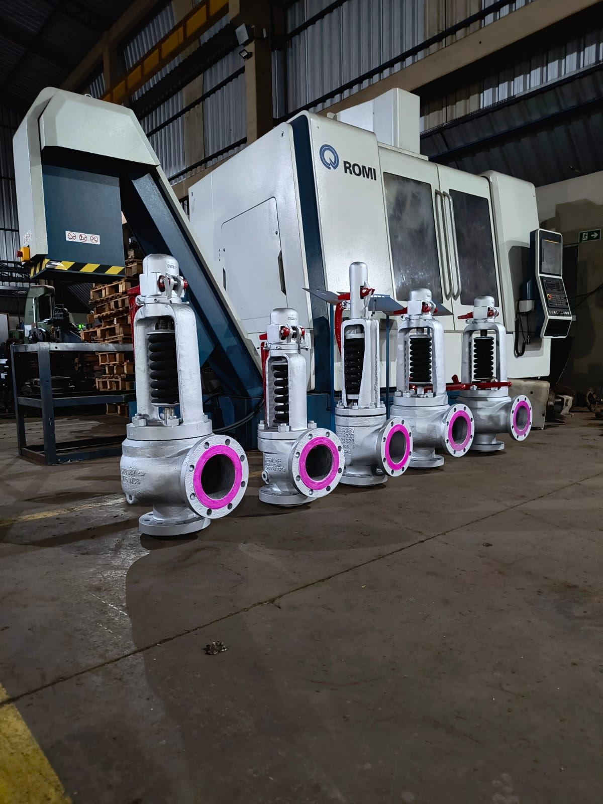

NEW Válvulas Industriais

Fornecimento, automação e manutenção de válvulas para usinas e indústrias de todo o Brasil.
Sertãozinho/SP · atendimento em todo o território nacional
Quem somos
A NEW nasceu em Sertãozinho, no coração do setor sucroenergético. Fornecemos, automatizamos e recuperamos válvulas industriais para usinas, estações de tratamento, mineradoras, papel e celulose e petroquímica, com responsabilidade técnica registrada no CREA-SP e atendimento em qualquer parte do país.

Barracão próprio no Distrito Industrial de Sertãozinho, com estoque, bancada de manutenção e usinagem.
Válvulas para serviço pesado

Classe 150


Borboleta, gaveta, globo e retenção, do fornecimento à automação.
Catálogo
Borboleta bi-excêntrica Classe 150
Dupla excentricidade, sede em RPTFE reforçado com fibra de vidro e projeto conforme API 609 Categoria B. Estanqueidade bubble tight no ensaio API 598.
- Diâmetros
- 2" a 48" (DN 50 a 1200)
- Classe de pressão
- ASME 150
- Extremidades
- Semi-lug
- Temperatura
- até 250 °C contínuo
- Corpo e disco
- WCB, ferro nodular, CF8, CF8M, CF3
- Sede
- RPTFE
Borboleta wafer e lug
Controle e isolamento em sistemas industriais diversos.
- Diâmetros
- 2" a 40"
- Classe de pressão
- ASME 150
- Temperatura
- 20 °C a 260 °C
- Corpo
- Aço-carbono, inox, níquel
- Sede
- EPDM, PTFE, Buna, Viton
Retenção wafer
Evita refluxo em sistemas de bombeamento e processo: químicos, vapor, óleo e água.
- Diâmetros
- 2" a 40"
- Classe de pressão
- ASME 150
- Temperatura
- 10 °C a 400 °C
- Corpo
- Ferro fundido, aço-carbono, inox
- Sede
- EPDM, Buna, Viton, metal
Gaveta, globo e controle
Fornecimento e manutenção sob consulta. Envie a especificação da linha (fluido, pressão, temperatura e diâmetro) e indicamos a válvula adequada.
Atuador pneumático
Simples ou dupla ação, padrão ISO 5211 e NAMUR.
- Torque
- até 12.992 Nm
- Pressão de ar
- 3,0 a 8,0 bar
- Temperatura
- -20 °C a +80 °C
- Corpo
- Alumínio anodizado ou epóxi
Posicionador pneumático
Para atuadores de simples e dupla ação, com carcaça robusta para ambientes agressivos.
- Sinal
- 4 a 20 mA
- Carcaça
- Alumínio fundido
- Indicação
- Indicador de posição de alta visibilidade
Solenoide NAMUR 5/2 vias
Comando direcional para atuadores pneumáticos de dupla ação, com montagem direta.
- Tensão
- 24 Vcc
- Proteção
- IP65, conector DIN 43650
- Corpo
- Alumínio
Caixa redutora
Acionamento manual de válvulas de grande porte.
- Torque
- até 8.000 Nm
- Flange
- ISO 5211
- Proteção
- IP65, corpo em ferro fundido
- Volante
- Aço ou alumínio
Borboleta bi-excêntrica Classe 150
Segmentos atendidos
- Usinas de açúcar e etanol
- Plantas de etanol de milho
- Tratamento de água e efluentes
- Mineração
- Papel e celulose
- Petróleo e petroquímica
Manutenção com rastreabilidade
Cada válvula que chega ao barracão é conferida, diagnosticada e recuperada conforme a especificação original, com registro de cada etapa. Atendemos no barracão ou diretamente em campo.
Montagens industriais
Da preparação à instalação final: válvulas e atuadores, tubulações industriais e comissionamento, com equipe técnica em campo.
Fabricação de componentes
Suportes, flanges, peças usinadas sob encomenda e subconjuntos sob medida.
Ordem de serviço
Na chegada
Recebimento e conferêncialistagem completa
Na bancada
Desmontagem e avaliaçãorelatório técnico
Registro de cada componentelaudo fotográfico
No reparo
Recuperação e usinagemespecificação original
Montagem finalbarracão ou campo
Válvula pronta para operarcom documentação
Estrutura e estoque
Estoque de válvulas prontas para entrega e bancada própria de manutenção e usinagem.


Contato
NEW Service Equipamentos
Rua Argentina Grillo Badia, 960Sertãozinho/SP · 14176-113
(16) 99722-3976 comercial@newequipamentos.ind.brPedir orçamento
Conte o que precisa. O pedido abre no WhatsApp da NEW, já preenchido, e você confere antes de enviar.